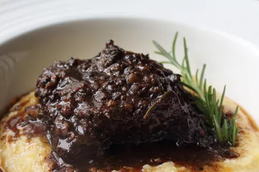

Tuscan Black Pepper Beef

Description
The story goes that terracotta tile workers in Impruneta, Tuscany, would place this stew into
clay pots and cook it in their still-hot kilns overnight where it would be ready in the morning.
They used a lot of pepper because the meat was not always top quality. The amount of pepper is up
to you--I used a ridiculous amount, but even so it wasn't overpowering.
Ingredients
- 6 beef short ribs (8 to 10 oz. each)
- 1 tablespoon kosher salt
- 8 cloves garlic, peeled and crushed
- 1 tablespoon tomato paste
- 2 tablespoons whole black peppercorns, freshly crushed
- 1 tablespoon freshly ground black pepper
- 3 sage leaves
- 3 small sprigs fresh rosemary
- 2 bay leaves
- 2 cups red wine, preferably Chianti
- salt to taste, to adjust sauce
Steps
- Place meat in a large mixing bowl
- Sprinkle all sides generously with 1 tablespoon kosher salt.
- Place chopped garlic and a pinch of salt in a mortar and mash with pestle until pastelike
- Add tomato paste; mash until blended